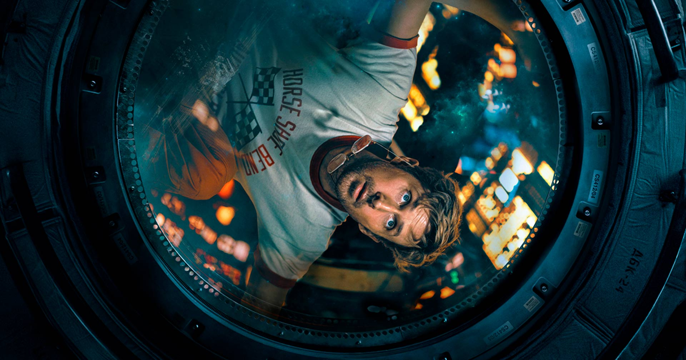
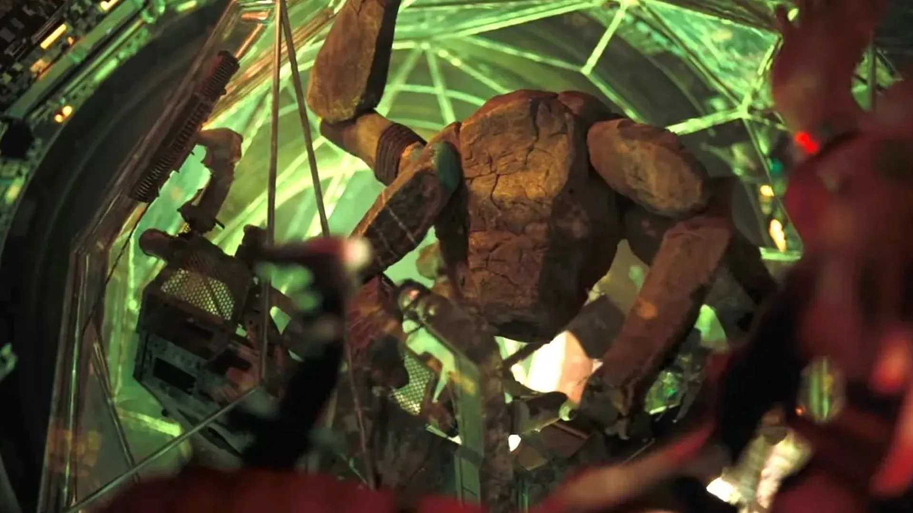
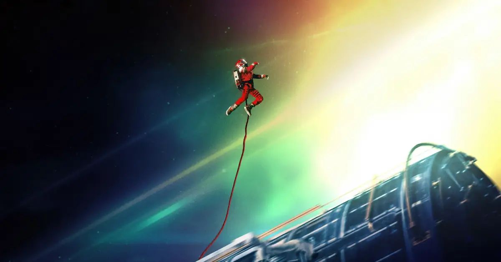

Bem, o título já é incrível por si só, né? E assim como aconteceu com o livro, pra mim esse foi um dos grandes acertos da localização da obra. “Devoradores de Estrelas” soa muito mais impactante do que Project Hail Mary, e passa perfeitamente aquela sensação de ameaça gigantesca que a história tenta construir. E a pergunta que fica é: um nome tão forte consegue entregar um filme à altura? Na maior parte do tempo, sim.

Como todo bom filme espacial, os efeitos visuais precisam impressionar, e aqui eles realmente impressionam. A galáxia é linda, as naves — tanto por dentro quanto por fora ,possuem um visual fantástico, e claro, certas participações extraterrestres acabam sendo um espetáculo à parte. Visualmente, é um filme extremamente agradável de acompanhar.
Em relação à trama, eu provavelmente colocaria um selo instantâneo de “excelente” sem pensar duas vezes… se eu não tivesse lido o livro pouco antes de assistir ao filme. E não estou dizendo que a adaptação é ruim — muito longe disso —, mas é impossível ignorar certas diferenças quando a história original ainda está tão fresca na memória.



Conhecendo a base da premissa e dos acontecimentos, dá pra perceber claramente alguns acréscimos muito legais, mas também alguns momentos que parecem apressados demais. A viagem de Grace é longa, cheia de descobertas e construção emocional, mas o tempo do cinema exige cortes, e em vários momentos você sente como se partes inteiras do livro estivessem sendo picotadas na sua frente. Algumas cenas e desenvolvimentos que eu esperava simplesmente acabam sendo… devorados.
“Devoradores de Estrelas talvez não consiga carregar toda a viagem que existe no livro, mas ainda entrega uma aventura espacial extremamente carismática e corajosa, mesmo que o Grace discorde.”
Ainda assim, prefiro não falar muito sobre a história, porque mesmo nessas circunstâncias a experiência continua ótima. A viagem é divertida, o
humor funciona muito bem quando aparece, e o ponto mais alto da trama — tanto no livro quanto no filme, pelo menos pra mim — continua aqui, extremamente carismático, roubando
a cena sempre que aparece com suas pernas e sua presença impossível de não gostar.
Então me diz: o que você está esperando pra fazer essa viagem, “pergunta”?
✔ O QUE É BOM
- Efeitos visuais lindíssimos e muito imersivos
- Humor leve e bem encaixado durante a jornada.
- O Rocky.
✖ O QUE NÃO É BOM
- Alguns acontecimentos parecem resumidos demais
Discussão e Opiniões